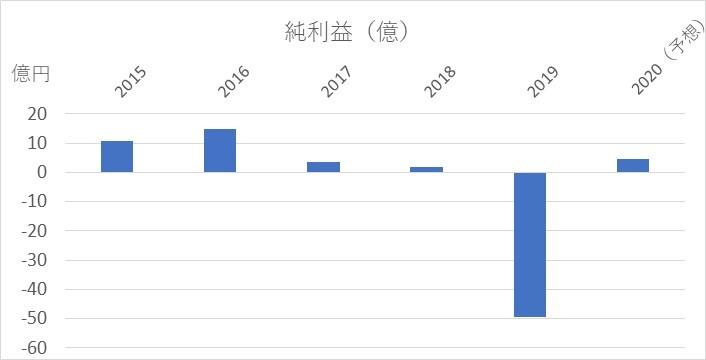
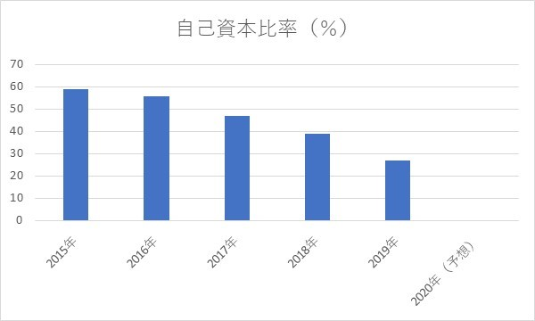
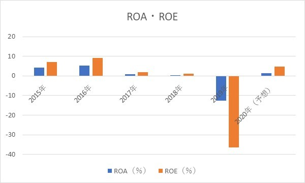

店舗削減・ジョイフル
2020/6/8
参照：kigyorinen.blog.fc2.com/blog-entry-124.html
ジョイフルの大幅業績悪化
ジョイフルの店舗削減について、企業分析の観点から見ていきます。
目次
- 1 ジョイフル・店舗削減
- 2 純利益
- 3 自己資本比率
- 4 ROA・ROE
- 5 まとめ
ジョイフル・店舗削減
2020年6月8日にファミレス店・ジョイフルが200の店舗を閉鎖することを発表した。これは、 ジョイフルのおよそ3割の店舗を閉鎖するということになります。
この背景にあるのは、もちろん新型コロナウイルス蔓延による外出自粛の影響であり、4月5月ともに例年の売り上げの半分に
なったとされている。（詳しくは、こちら）
また、終息後の外食の需要も問題視されているため、それに対応しているという面もあるかもしれません。
では、なぜジョイフルが店舗削減に追い込まれたかを見ていきます。
純利益
単位が大きいので、正確な数字だと...
- 2015年：10.7億円
- 2016年：14.7億円
- 2017年：3.6億円
- 2018年：1.7億円
- 2019年：-49.4億円
- 2020年：4.7億円（予想）
純利益において、赤字になったことをきっかけに今回の策に出たのだろうと思います。
年々業績が下がっていたところに加えて、外出自粛でとどめを刺されたという感じですね。
ファミレスは家族で楽しく食事できる場所というのがコンセプトなので、持ち帰り対応に
飲食店ほど対応できなかったのではないかと思います。
営業利益率も2015年から5％を切っていたこともあり、もともと事業改革が必要だったかもしれませんが、販売管理費は60％超ほどだったので、 人件費削減という形で販売管理費を削る方針だとうかがえます。
自己資本比率

自己資本比率は、比較的優秀だったようですが、2019年度の業績不振により少し厳しくなっていますね。
内訳としては、株主資本が37％ほど減少しているのが主な原因です。
ROA・ROE

ROA、ROEについては、営業利益率が悪いのでもともと低いですが、2019年はどちらも減らしています。
株主資本は1年で36％、総資産は1年で12％ほど減少しているので、相当ですね。
これだけの業績悪化だと外出自粛以前の経営も芳しくなかったんじゃないかなと思います。
まとめ
思ってたよりも悲惨な状況だなと思いました。
もともと近年の業績は良くなかったですが、財務状況が良かったので倒産せずに済んでいるのかなと思います。
店舗削減といっても、赤字経営の店舗を閉鎖していくはずなので、2020年度の業績が回復を見込んでいるのかと思います。
ただ、個人的な意見では、外食の需要が大きく低下した時に、ジョイフルのようなファミレスは
生き残りにくくなると思います。
よって、業績アップのために起こりうる市場変化に対応することが必要だと考えます。